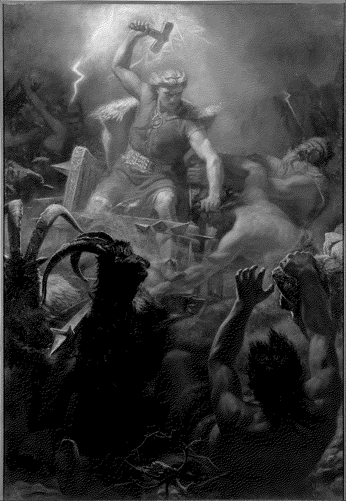
open full sizethor-zine-1bit.png
Floyd–Steinberg diffusion into one bit, the honest photocopied zine
Tor's Fight with the Giants → floyd-steinberg · bw · 2 colours · 900×1301 · 496 KB
preset zine
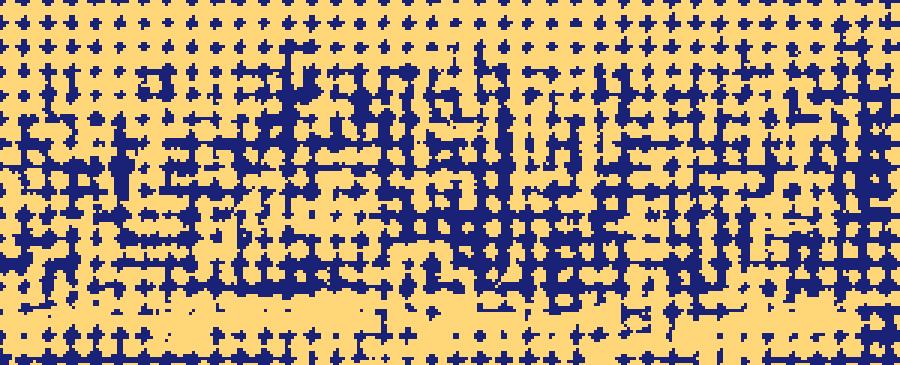
open full sizecouncil-riso-duotone.png
two inks and nothing else, the duotone a riso poster is built on
The Council of the Gods → clustered-dot-8 · bw · 2 colours · 900×365 · 23 KB
preset duo
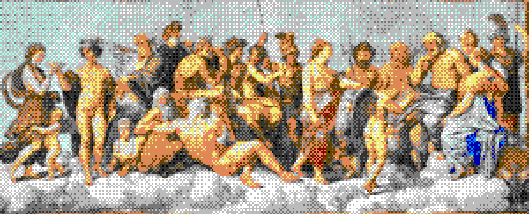
open full sizecouncil-c64-poster.png
the Commodore 64's own sixteen colours, a poster forty years late
The Council of the Gods → bayer8 · c64 · 14 colours · 900×365 · 57 KB
preset c64
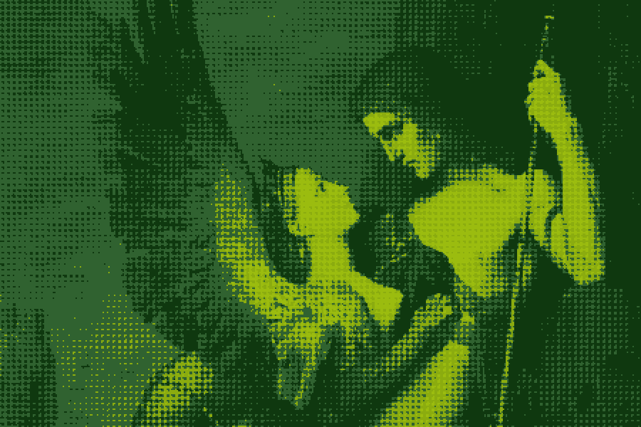
open full sizeoedipus-terminal-green.png
a phosphor re-ink on a four-shade screen, with scanlines over the top
Oedipus and the Sphinx → clustered-dot · gameboy · 4 colours · 900×600 · 82 KB
preset terminal
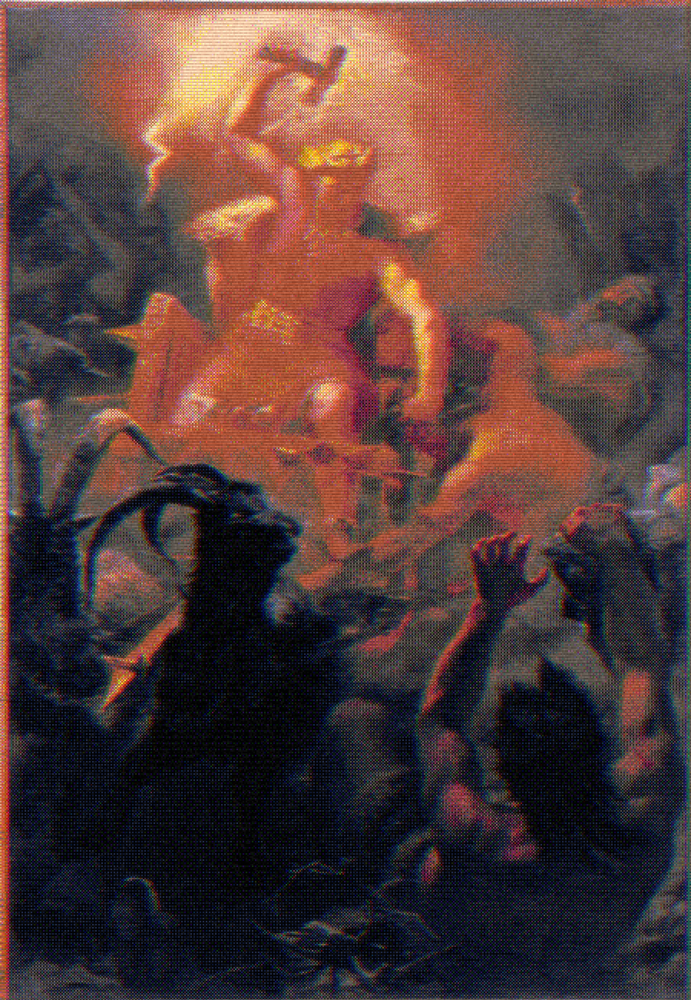
open full sizethor-vhs-decay.png
the whole effects stack at once - aberration, blocks, scanlines and grain
Tor's Fight with the Giants → bayer4 · pico8 · 90730 colours · 900×1301 · 1135 KB
preset vhs
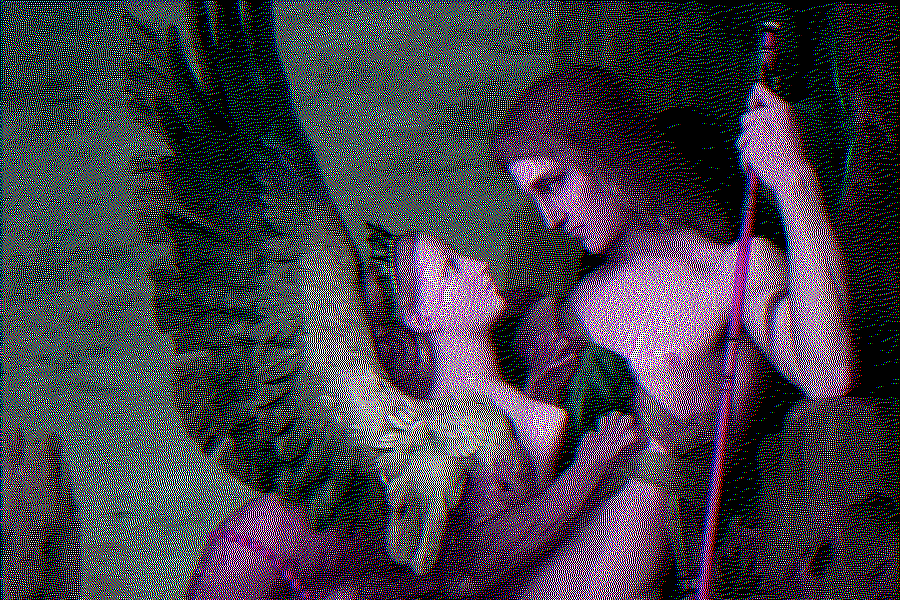
open full sizeoedipus-glitch-sort.png
pixel sorting - rows of the proof reordered by tone instead of drawn in place
Oedipus and the Sphinx → floyd-steinberg · cga · 18 colours · 900×600 · 604 KB
preset sort
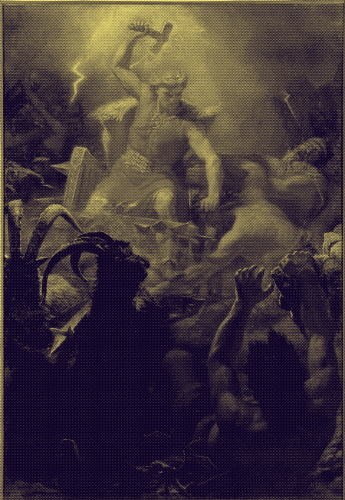
open full sizethor-thermal-cam.png
a thermal re-ink: the grade decides what is hot, the dither decides the edges
Tor's Fight with the Giants → bayer16 · gray-16 · 16 colours · 900×1301 · 361 KB
preset thermal
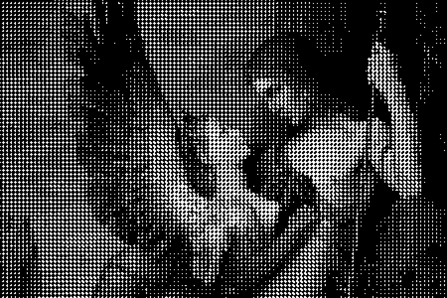
open full sizeoedipus-newsprint.png
a halftone screen - an ordered dot at every pixel size, no noise anywhere
Oedipus and the Sphinx → halftone · bw · 2 colours · 900×600 · 58 KB
preset newsprint
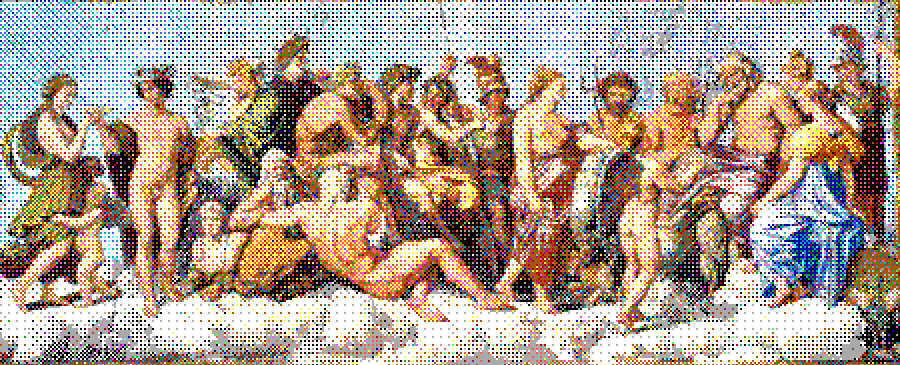
open full sizecouncil-yliluoma-ega.png
Yliluoma mixing: a sixteen-colour hardware palette, blended in dots rather than snapped
The Council of the Gods → yliluoma-polished · ega · 16 colours · 900×365 · 162 KB
yliluoma-polished · ega · pixel size 2
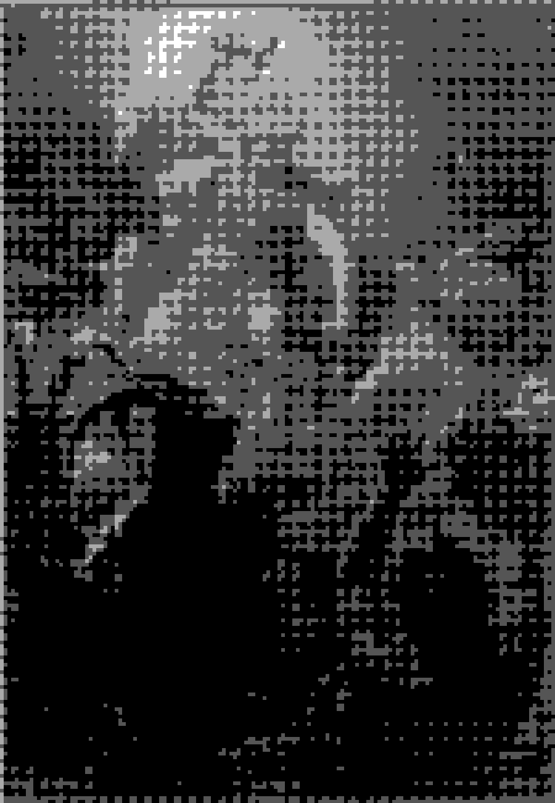
open full sizethor-pixel-art-6x.png
pixel size 6 on a four-ink handheld screen - the chunky output people come for
Tor's Fight with the Giants → clustered-dot · gameboy-pocket · 4 colours · 900×1301 · 49 KB
clustered-dot · gameboy-pocket · pixel size 6
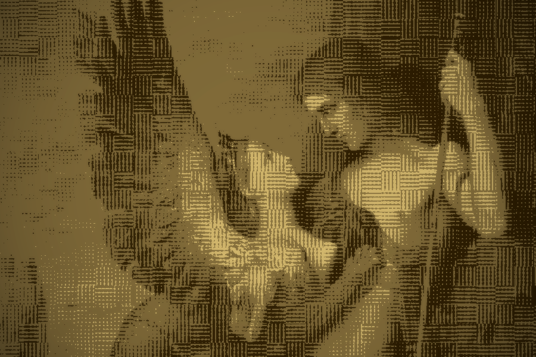
open full sizeoedipus-gold-leaf.png
four greys under a blue-noise screen, re-inked as gold leaf and lit from behind
Oedipus and the Sphinx → blue-noise-32 · gray-4 · 1906 colours · 900×600 · 637 KB
blue-noise-32 · gray-4 · tone gold · pixel size 1 · effects: vignette 45 · glow 2/40
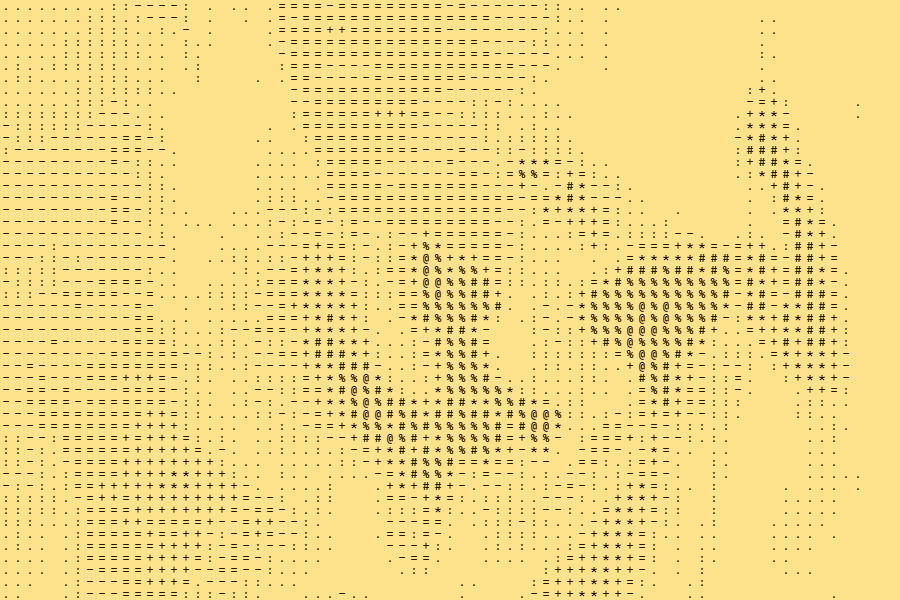
open full sizeoedipus-text-mode-ascii.png
type mode: the same proof set in characters, the grid the .txt export carries
Oedipus and the Sphinx → atkinson · bw · 95 colours · 900×600 · 76 KB
atkinson · bw · pixel size 1 · type mode, ascii at 12px
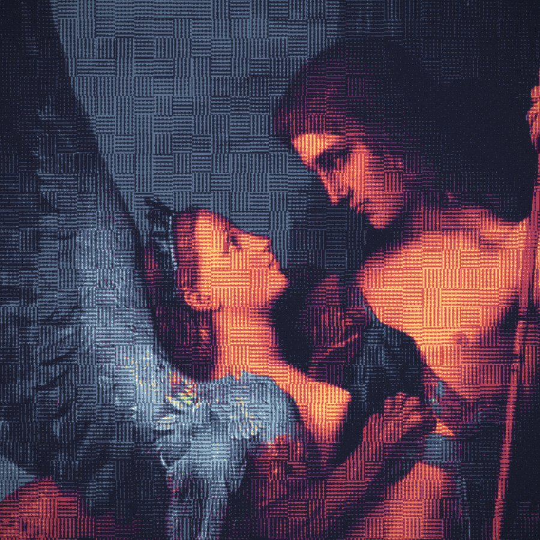
open full sizeoedipus-sweetie-16.png
Sweetie 16 in a blue-noise proof: pastel skin, cobalt wing, a soft bloom
Oedipus and the Sphinx → blue-noise-32 · sweetie-16 · 18869 colours · 900×900 · 1739 KB
blue-noise-32 · sweetie-16 · pixel size 1 · crop 25%/5%/58%/88% · contrast 1.15 · saturation 1.1 · effects: vignette 32, grain 8 · glow 2/20
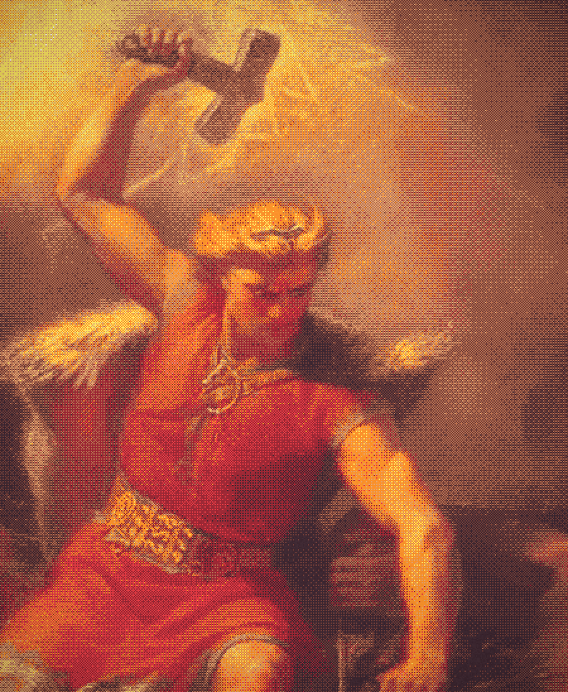
open full sizethor-endesga-strike.png
Endesga 16 under the hammer: a saturated ordered screen for Thor's strike
Tor's Fight with the Giants → bayer8 · endesga-16 · 3100 colours · 900×1096 · 768 KB
bayer8 · endesga-16 · pixel size 2 · crop 28%/3%/46%/38% · contrast 1.35 · brightness 0.92 · saturation 1.25 · effects: vignette 28, grain 8
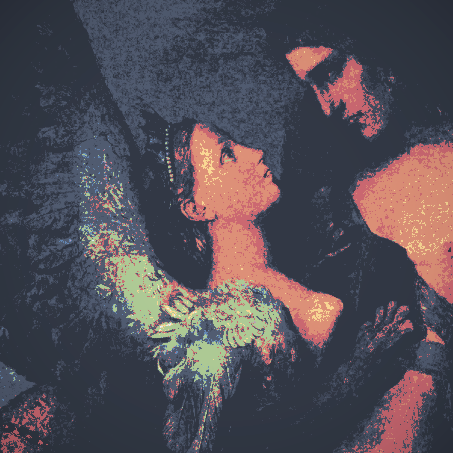
open full sizeoedipus-nord-riddle.png
Nord cools the meeting of Oedipus and the Sphinx to marble and teal
Oedipus and the Sphinx → smooth-diffusion · nord · 6445 colours · 900×900 · 831 KB
smooth-diffusion · nord · pixel size 1 · crop 25%/19%/50%/75% · contrast 1.22 · brightness 1.04 · saturation 0.85 · effects: vignette 25 · glow 1/15
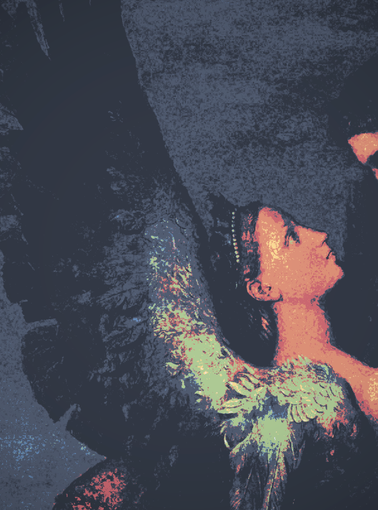
open full sizeoedipus-nord-wing.png
the Sphinx's wing in Nord, close enough to count the feathers
Oedipus and the Sphinx → smooth-diffusion · nord · 7978 colours · 900×1212 · 1090 KB
smooth-diffusion · nord · pixel size 1 · crop 17%/4%/43%/88% · contrast 1.25 · brightness 1.05 · saturation 0.85 · effects: vignette 25 · glow 1/15
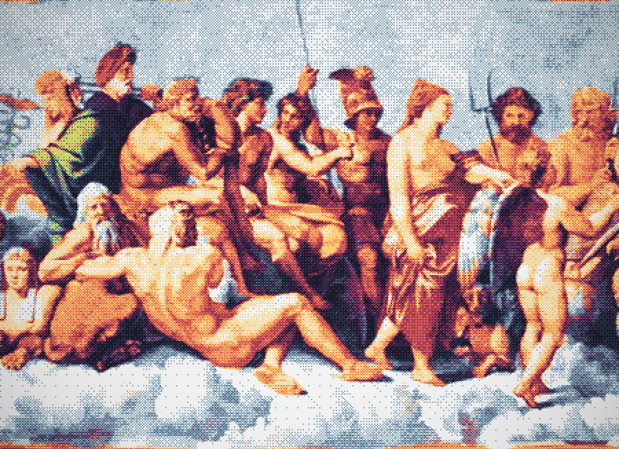
open full sizecouncil-sweetie-16.png
Sweetie 16 turns the Council of the Gods into a pastel postcard
The Council of the Gods → bayer8 · sweetie-16 · 604 colours · 900×653 · 302 KB
bayer8 · sweetie-16 · pixel size 2 · crop 22%/0%/56%/100% · contrast 1.3 · saturation 1.15 · effects: vignette 25
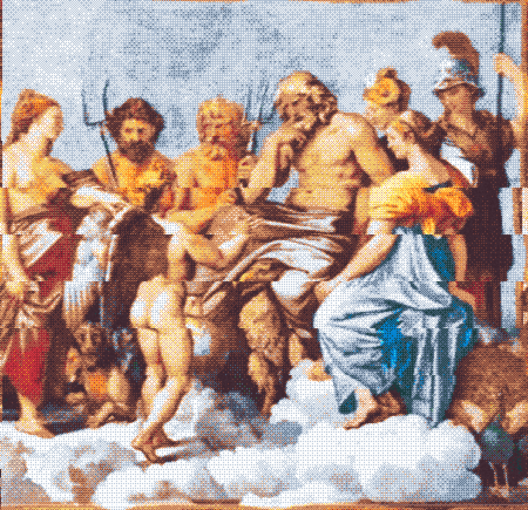
open full sizecouncil-endesga-court.png
Endesga 16 on the right-hand court, with a strip of tape tracking
The Council of the Gods → bayer8 · endesga-16 · 179 colours · 900×870 · 474 KB
bayer8 · endesga-16 · pixel size 2 · crop 58%/0%/42%/100% · contrast 1.25 · saturation 1.15 · effects: tracking 30, grain 10
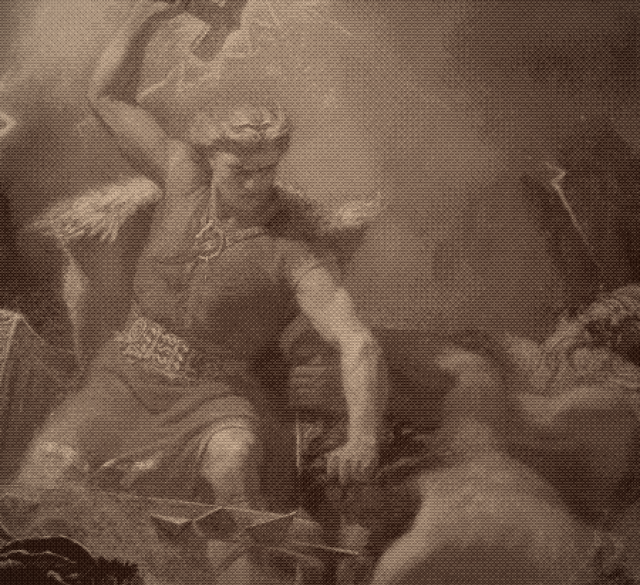
open full sizethor-oxide-rust.png
Oxide re-inks Thor and the giant as a rusted engraving
Tor's Fight with the Giants → bayer8 · gray-8 · 518 colours · 900×823 · 358 KB
bayer8 · gray-8 · tone oxide · pixel size 2 · crop 23%/6%/69%/44% · contrast 1.35 · effects: vignette 30
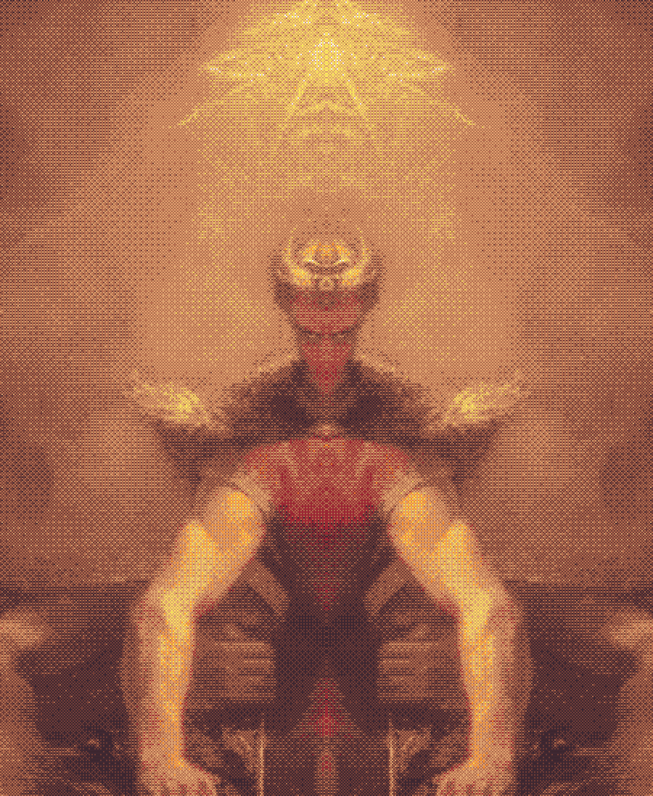
open full sizethor-kaleido-mask.png
Thor's strike mirrored into a kaleidoscope: a golden mask
Tor's Fight with the Giants → bayer8 · endesga-16 · 16 colours · 900×1096 · 229 KB
bayer8 · endesga-16 · pixel size 2 · crop 28%/3%/46%/38% · contrast 1.1 · brightness 1.05 · effects: kaleidoscope 30 2, scanlines 8
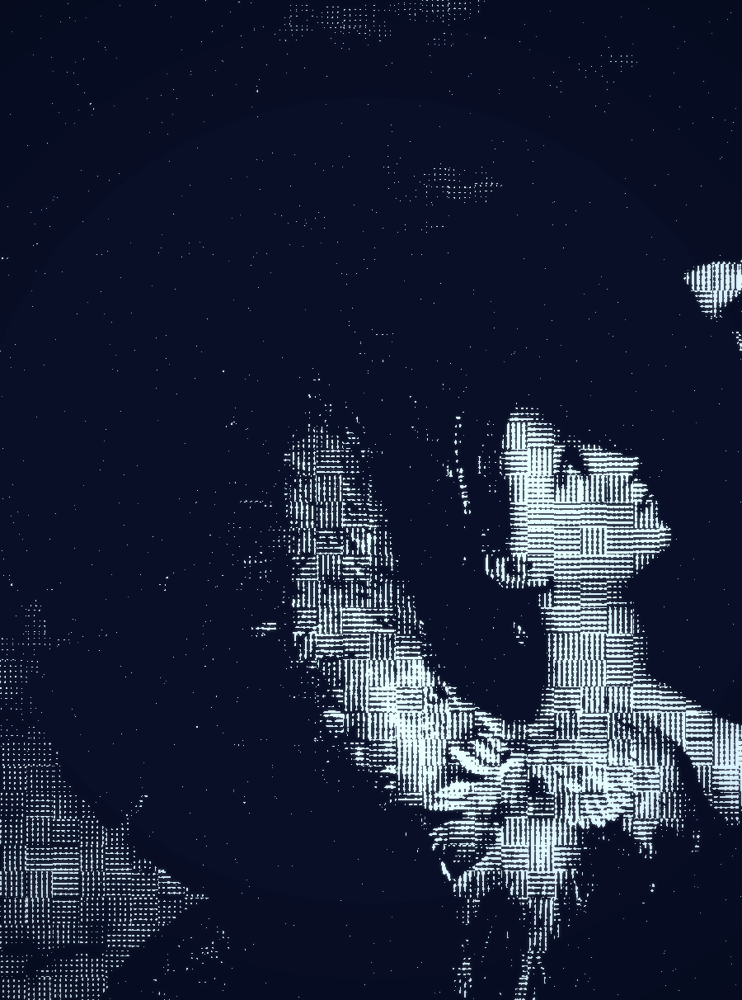
open full sizeoedipus-starfield.png
ice on black: the Sphinx's wing under a starfield
Oedipus and the Sphinx → blue-noise-32 · ice · 2075 colours · 900×1212 · 583 KB
blue-noise-32 · ice · pixel size 1 · crop 17%/4%/43%/88% · contrast 1.15 · effects: starfield 42 stars, vignette 28 · glow 2/25
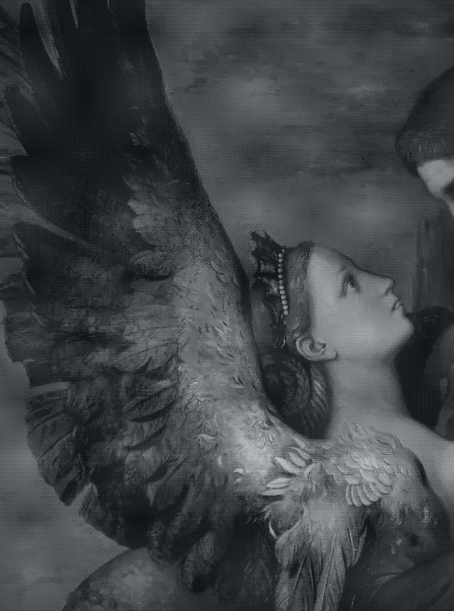
open full sizeoedipus-selenium-wing.png
Selenium gives the wing a platinum-print glow
Oedipus and the Sphinx → bayer8 · gray-16 · 623 colours · 900×1212 · 1281 KB
bayer8 · gray-16 · tone selenium · pixel size 1 · crop 17%/4%/43%/88% · contrast 1.3 · effects: vignette 30
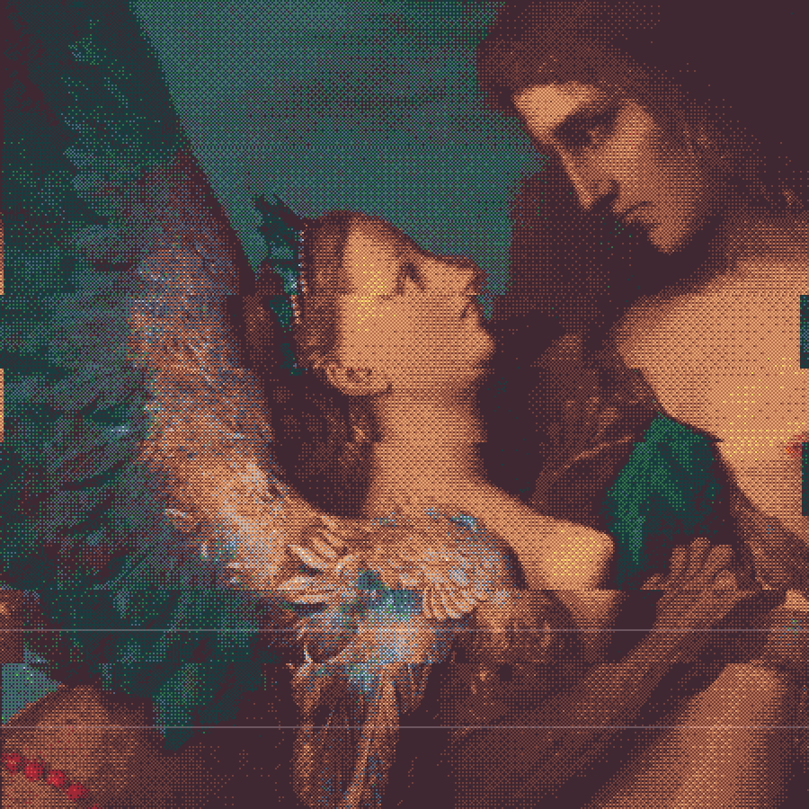
open full sizeoedipus-tape-touch.png
tape tracking tears the moment of touch into horizontal bands
Oedipus and the Sphinx → bayer8 · endesga-16 · 23 colours · 900×900 · 202 KB
bayer8 · endesga-16 · pixel size 2 · crop 25%/19%/50%/75% · contrast 1.2 · saturation 1.15 · effects: tracking 32
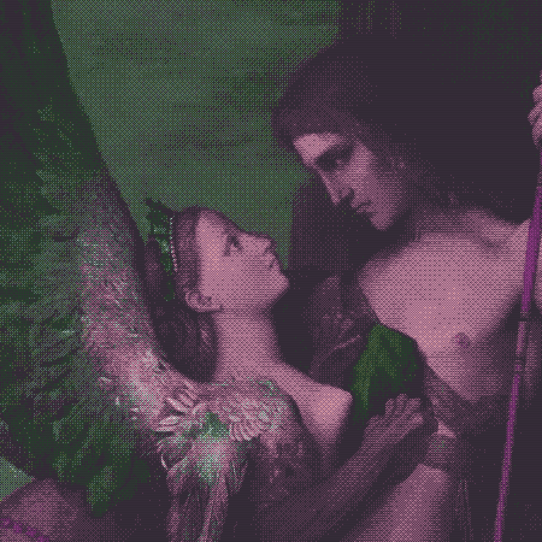
open full sizeoedipus-channel-roll.png
channel roll separates the proof into green and magenta histories
Oedipus and the Sphinx → bayer8 · endesga-16 · 26 colours · 900×900 · 215 KB
bayer8 · endesga-16 · pixel size 2 · crop 25%/5%/58%/88% · contrast 1.2 · saturation 1.15 · effects: channelroll 45, scanlines 8
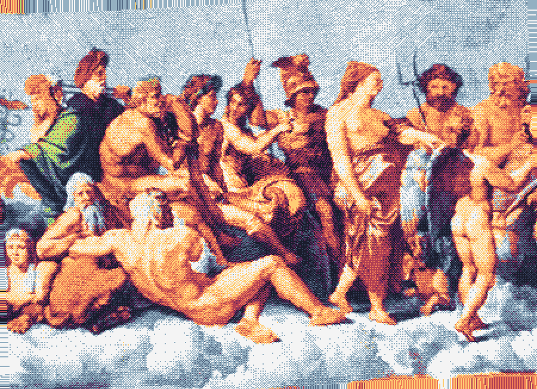
open full sizecouncil-ripple-swirl.png
a slow swirl bends the Council's pastel court out of register
The Council of the Gods → bayer8 · sweetie-16 · 10 colours · 900×653 · 158 KB
bayer8 · sweetie-16 · pixel size 2 · crop 22%/0%/56%/100% · contrast 1.2 · saturation 1.1 · effects: ripple 24 swirl